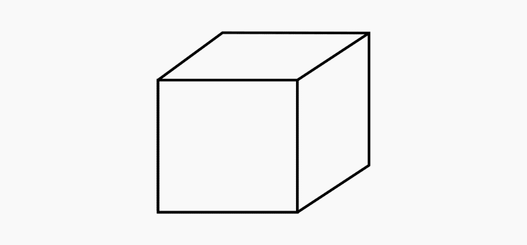
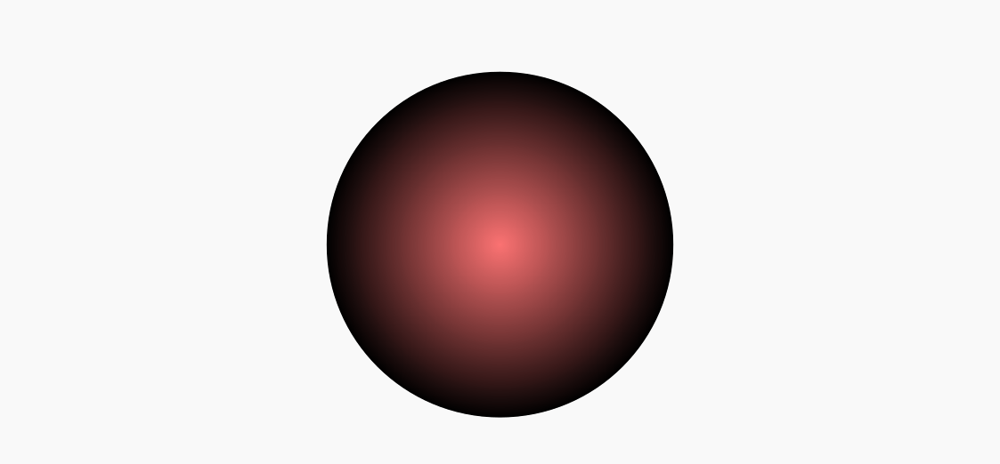
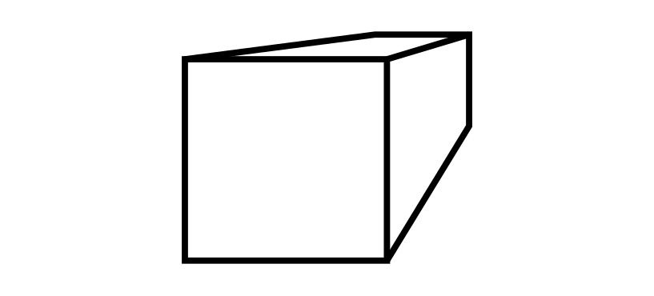
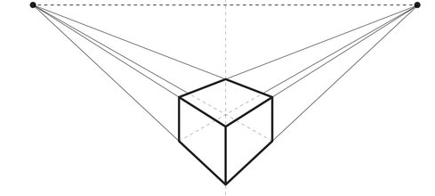
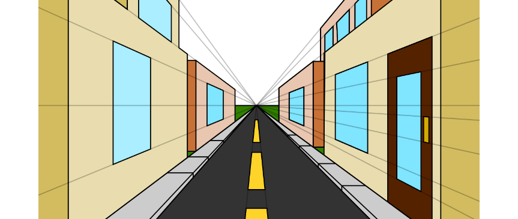

Várias ferramentas em diferentes softwares podem ser utilizadas para dar a sensação de profundidade e perspectiva em um objeto ou desenho. A sensação de profundidade consiste em fazer com que um objeto mesmo composto apenas de linhas bidimensionais (x e y) formem uma imagem que se pareça com um objeto tridimensional (x, y e z). Veja o exemplo abaixo:
Cinco linhas a mais no desenho de um quadrado o transformam num cubo:
Um efeito de gradiente pode transformar uma elipse numa esfera:
É possível ainda dar sensação de tridimensionalidade a objetos com efeitos de sombra e brilho o que veremos logo à frente.
Diferente da profundidade, a perspectiva consiste em dar a sensação de longitude, de que um objeto está se afastando ou se aproximando, vamos ver como fica o cubo do desenho anterior com sensação de perspectiva:
Simulação de perspectiva:
A perspectiva para transmitir a sensação correta deve possuir um ou mais "pontos de fuga" (Vanishing Point em inglês), que são pontos para os quais as linhas do desenho, ou noção de profundidade devem correr. Uma malha de perspectiva pode ter um, dois, ou três pontos de fuga.
Desenho em perspectiva com dois pontos de fuga:
Perspectiva com um ponto de fuga:
